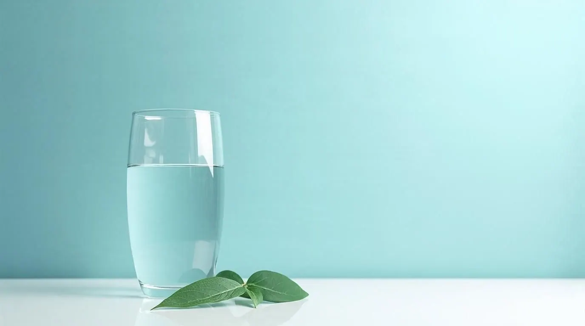

겨울철 정강이 건조와 밤 가려움은 난방으로 건조해진 실내, 뜨거운 샤워, 늦은 보습과 관련 있는 경우가 많아 가려운 시간대와 씻는 습관, 잠의 질을 먼저 묻고 생활 습관을 함께 점검합니다.
여쭙는 것
- 가려움이 하루 중 언제 가장 심한가요? 잠들기 전인가요, 자다가인가요?
- 샤워는 하루 몇 번, 물 온도는 어느 정도로 하시나요?
- 보습제는 언제, 얼마나 자주 바르시나요?
생활에서 해 볼 것
- 샤워는 미지근한 물로 10분 안쪽으로 하고 때를 세게 밀지 않기
- 씻고 물기를 가볍게 두드려 닦은 뒤 3분 안에 보습제 바르기
- 잠들기 30분 전 정강이에 보습제를 한 번 더 덧바르기
한의원에서 함께 살필 것
- 가려움 때문에 잠을 자주 깨는 경우 피부 상태와 함께 잠의 흐름을 살핍니다.
- 몸이 차고 건조한 편인지, 열이 오르는 편인지 체질과 생활 리듬을 함께 살핍니다.
- 소화나 대변 상태, 물 마시는 양처럼 피부와 함께 오는 몸의 신호를 이어서 여쭙니다.
먼저 확인이 필요한 신호
- 긁지 않았는데도 붉은 반점이 넓게 퍼지는 경우
- 붉은 발진이 번지면서 열이 나거나 몸살 기운이 함께 있는 경우
- 피부가 갈라져 피가 나거나 노란 진물·고름이 나고 열감이 있는 경우

겨울에 정강이가 하얗게 일어나고 밤에 가려운 것은 피부의 수분이 빠져나가 겉을 지키는 장벽이 약해진 경우가 많아, 씻는 방법과 보습 시기, 실내 습도부터 바꿔 보는 것이 첫걸음입니다. 이불 속에서 몸이 따뜻해지면 가려움이 더 또렷해져 긁다가 잠을 설친다는 분이 많고, 상도동처럼 오래된 주택과 아파트가 섞인 동네에서는 난방 방식에 따라 실내가 많이 건조해지기도 합니다.
왜 이런 불편이 생길 수 있나요
- 정강이는 피지가 적은 부위라 찬 바람과 난방에 수분을 쉽게 잃습니다.
- 뜨거운 물로 오래 씻거나 때를 밀면 피부를 지키는 기름막이 함께 씻겨 나갑니다.
- 잠자리에서 체온이 오르면 가려움을 더 크게 느끼는 경우가 있습니다.
- 겨울에는 갈증을 덜 느껴 물을 적게 마시고, 따뜻한 커피나 차로 수분을 대신하는 생활이 겹치기도 합니다.
- 긁으면 잠깐 시원하지만 피부가 더 자극받아 다시 가려워지는 고리가 생기기 쉽습니다.
- 한의학에서는 몸이 건조하고 열이 오르는 경향, 잠과 소화의 리듬도 피부와 함께 살핍니다.

먼저 이렇게 여쭙니다
- 가려움이 하루 중 언제 가장 심한가요? 잠들기 전인가요, 자다가인가요?
- 샤워는 하루 몇 번, 물 온도는 어느 정도로 하시나요?
- 보습제는 언제, 얼마나 자주 바르시나요?
- 긁은 자리에 진물이나 딱지가 생긴 적이 있나요?
- 집 난방은 바닥 난방인가요, 온풍기나 전기난로인가요?
- 손발은 찬데 이불 속에서 다리만 화끈거리는 느낌이 있나요?
- 잠들기 전에 술이나 매운 음식, 뜨거운 차를 드시는 편인가요?
일상에서 먼저 해 볼 수 있는 것
- 샤워는 미지근한 물로 10분 안쪽으로 하고 때를 세게 밀지 않기
- 씻고 물기를 가볍게 두드려 닦은 뒤 3분 안에 보습제 바르기
- 잠들기 30분 전 정강이에 보습제를 한 번 더 덧바르기
- 가습기나 젖은 빨래로 실내 습도를 40~60% 정도로 맞추기
- 면 소재의 헐렁한 잠옷을 입고 전기장판 온도는 낮게 두기
- 잠들기 1~2시간 전부터 침실 온도를 조금 낮추고 술과 뜨거운 음료 줄여 보기
- 손톱을 짧게 다듬고, 가려울 때는 긁는 대신 차가운 수건을 잠시 대기
상황별 예시
- 예를 들어 사무실 책상 밑 온풍기 바람을 하루 종일 다리에 맞고, 퇴근 뒤 뜨거운 물로 오래 샤워하는 직장인이라면, 온풍기 방향을 다리에서 돌리고 샤워 시간과 물 온도부터 줄여 보는 것이 첫걸음이 될 수 있습니다.
- 예를 들어 밤늦게까지 공부하다 새벽에 잠드는 수험생이라면, 잠이 늦고 짧은 날 가려움을 더 크게 느끼는 경우가 있어 잠든 시각과 가려움을 나란히 적어 보면 흐름이 보이기도 합니다.
- 예를 들어 주말마다 목욕탕에서 때를 미는 습관이 있는 분이라면, 겨울 동안만이라도 때 밀기를 쉬고 미지근한 샤워로 바꾼 뒤 2주 정도 정강이 사진을 비교해 볼 수 있습니다.
스스로 점검해 보세요
- 샤워 물이 손등에 뜨겁게 느껴지는 온도인가요?
- 씻고 나서 보습제를 바르기까지 10분 넘게 걸리나요?
- 침실 습도가 30% 아래로 내려가는 날이 많은가요?
- 전기장판을 높은 온도로 켜 둔 채 잠드시나요?
- 가려움 때문에 밤에 두 번 넘게 깨는 날이 일주일에 사흘 이상인가요?
- 긁은 자리에 딱지나 진물이 생긴 적이 있나요?
해당하는 항목이 많다면 생활 습관부터 하나씩 바꿔 보시고, 진물이 나거나 붉은 발진이 번진다면 피부과 확인을 먼저 받아 보세요.

한의원에서 함께 살필 수 있는 경우
- 가려움 때문에 잠을 자주 깨는 경우 피부 상태와 함께 잠의 흐름을 살핍니다.
- 몸이 차고 건조한 편인지, 열이 오르는 편인지 체질과 생활 리듬을 함께 살핍니다.
- 소화나 대변 상태, 물 마시는 양처럼 피부와 함께 오는 몸의 신호를 이어서 여쭙니다.
- 피부과 진료를 받고 있으면서 잠과 체온, 소화 같은 몸 전체의 흐름도 함께 살피고 싶은 경우입니다.
좋은꿈참사랑한의원에서는 첫 방문 때 가려움이 시작된 시기와 심한 시간대, 씻는 습관과 집 난방을 먼저 충분히 듣고, 정강이 피부를 직접 보며 긁은 자국과 갈라진 곳이 있는지 확인합니다. 이어서 맥부터 짚어 보고, 필요하다고 판단될 때 설진을 더해 혀의 색과 마른 정도를 함께 살핍니다. 잠·소화·대변·손발의 온기처럼 몸 전체의 리듬을 여쭌 뒤 침이나 한약 상담처럼 상태에 맞는 방법을 정합니다. 바르고 있는 제품이나 처방받은 약이 있으면 함께 확인하고, 귀가 전에는 집에서 지켜볼 점과 다음에 확인할 일을 알려 드립니다.
얼마나 지켜보고 언제 상담할까요
- 씻는 방법과 보습, 실내 습도를 바꾼 뒤 1~2주 정도는 가려움 기록과 사진을 비교하며 지켜볼 수 있습니다.
- 2주가 지나도 밤에 깨는 횟수가 줄지 않거나, 가려움이 정강이를 넘어 몸 여러 곳으로 퍼지면 상담을 받아 보시기를 권합니다.
- 긁은 자리가 붉게 번지며 열감이 있거나 진물·고름이 나면 며칠 지켜보지 말고 바로 피부과 확인을 받습니다.

이렇게 기록해 오시면 상담이 쉬워집니다
- 가려움이 심했던 날짜와 시간, 그날 샤워 시간과 물 온도
- 그 주에 잠든 시각과 일어난 시각, 밤에 깬 횟수
- 침실 온도와 습도(습도계가 있다면 잠들기 전 숫자)
- 쓰고 있는 보습제와 연고(용기 사진도 괜찮습니다)
- 가장 심한 부위의 사진 한두 장
이런 증상은 먼저 확인이 필요합니다
- 긁지 않았는데도 붉은 반점이 넓게 퍼지는 경우
- 붉은 발진이 번지면서 열이 나거나 몸살 기운이 함께 있는 경우
- 피부가 갈라져 피가 나거나 노란 진물·고름이 나고 열감이 있는 경우
- 가려움과 함께 체중이 줄거나 피부·눈이 노랗게 보이는 경우
- 입술이나 눈이 붓고 숨이 차는 경우(바로 응급실)
번지는 발진, 진물·고름처럼 피부를 직접 봐야 하는 변화는 피부과 확인이 먼저이고, 입술·눈이 붓거나 숨이 차는 알레르기 응급 신호가 보이면 기다리지 말고 가까운 응급실로 가세요. 바르고 있는 연고나 먹는 약은 처방한 의사와 상의 없이 줄이거나 끊지 않습니다.
함께 읽으면 좋은 글
- 겨울에 몸이 가렵고 피부가 갈라질 때는 어떻게 관리하나요?
- 보일러를 세게 틀고 자면 등과 종아리가 가려운 것은 어떻게 살피나요?
- 가려움이 낮에 심한지 밤에 심한지는 왜 묻고, 어떻게 적어 두나요?
한눈에 보는 표
| 구분 | 핵심 |
|---|---|
| 여쭙는 것 | 가려움이 하루 중 언제 가장 심한가요? 잠들기 전인가요, 자다가인가요? 샤워는 하루 몇 번, 물 온도는 어느 정도로 하시나요? |
| 생활에서 해 볼 것 | 샤워는 미지근한 물로 10분 안쪽으로 하고 때를 세게 밀지 않기 씻고 물기를 가볍게 두드려 닦은 뒤 3분 안에 보습제 바르기 |
| 한의원에서 함께 살필 것 | 가려움 때문에 잠을 자주 깨는 경우 피부 상태와 함께 잠의 흐름을 살핍니다. 몸이 차고 건조한 편인지, 열이 오르는 편인지 체질과 생활 리듬을 함께 살핍니다. |
| 먼저 확인이 필요한 신호 | 긁지 않았는데도 붉은 반점이 넓게 퍼지는 경우 붉은 발진이 번지면서 열이 나거나 몸살 기운이 함께 있는 경우 |
자주 묻는 질문
보습제는 어떤 것을 골라야 하나요?
향이 적고 자극이 덜한 제품을 자주, 충분히 바르는 것이 더 중요합니다. 바르고 따갑거나 붉어지면 다른 제품으로 바꾸세요.
때를 밀면 가려움이 덜하지 않나요?
잠깐 시원할 수 있지만 피부 장벽이 얇아져 더 건조해질 수 있어 겨울에는 피하는 편을 권합니다.
전기장판을 써도 되나요?
온도를 높이면 피부가 더 마를 수 있어 낮게 쓰고, 잠든 뒤에는 꺼지도록 맞춰 두는 편을 권합니다.
피부과 치료와 함께 받아도 되나요?
받고 있는 치료와 바르는 제품을 알려 주시면 함께 확인합니다. 처방받은 약은 임의로 줄이거나 끊지 마세요.
평일 저녁에도 진료받을 수 있나요?
평일은 09:30~20:00(점심 13:00~14:00), 토·일·공휴일은 09:30~15:00에 진료합니다.
이 글은 일반적인 건강 정보이며 개인의 진단이나 치료를 대신하지 않습니다. 증상이 있거나 복용 중인 약이 있다면 진료를 통해 확인하세요. 치료 효과는 개인마다 다를 수 있습니다.
작성 기준: 일반적으로 알려져 있는 건강 정보를 참고해 정리했습니다(대표원장 감수). 증상 기록은 1~2주 동안 하루 1회, 비슷한 시간에 적어 오시면 지난 상태와 비교하기 쉽습니다.
좋은꿈참사랑한의원은 재진 때 지난번 이야기부터 이어서 여쭙니다. 진료시간과 예약은 오시는 길에서 확인하세요.
어디서 상담받을 수 있나요?
좋은꿈참사랑한의원은 서울 동작구 만양로2길 2 신성빌딩 3층·5층(서울 동작구 상도동, 7호선 상도역 3번 출구 근처)에 있습니다. 한의사 3명(이종호 대표원장, 조영기 수석진료원장, 정원영 진료원장)이 진료합니다. 진료시간은 평일 09:30~20:00(점심 13:00~14:00), 토·일·공휴일 09:30~15:00이며, 방문 전 전화로 확인을 권합니다. 예약은 네이버 예약, 카카오톡 상담, 전화 02-815-7510로 받습니다.